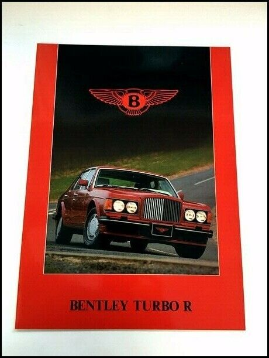

A comprehensive analysis of three luxury competitors
This is a College Project
Royal Luxury
Early in the 1970s, Rolls-Royce Motors Ltd started to develop a turbocharged engine. It was initially intended for the Camargue but, by the time the turbo was ready to
be offered in a production car, it had been decided to fit it to the Mulsanne saloon instead. The Mulsanne Turbo was the first Crewe-built Bentley to be launched
without being accompanied by a similar Rolls-Royce badged model.
Early Turbo Rs used the Mulsanne’s rectangular lights and had no skirts
The Mulsanne Turbo was a quick, comfortable car and the model would herald the start of the Bentley revival. The main objection customers (and the press) had to the Mulsanne Turbo concerned its
soft ride and road holding, which were not considered a match for its performance. The factory decided to overcome this problem by offering a handling package.As a result, the Bentley Turbo R was
introduced in March 1985. The “R” stood for “road holding”, to set it apart from its predecessor.
Just a better Mulsanne?

The Turbo R was sold alongside the Mulsanne Turbo for a brief moment, but the Mulsanne was taken out of production in 1985. In October 1986, for the 1987 model year, the Turbo R
received anti-lock brakes and new Bosch MK-Motronic fuel injection to replace the Solex carburetors. Other modifications carried out at the same time included new, slimmer sports seats and a higher rear axle ratio.
In mid-1988 (MY 1989) changes to the appearance were made, introducing twin round headlamps and a bigger front spoiler.[5] Around the turn of the year between 1991 and 1992, GM's 4L80-E four-speed
automatic transmission replaced the long running three-speed Turbo Hydramatic 400 throughout the Bentley/Rolls-Royce lineup, including the Turbo R.[6]
The Turbo R dashboard received a revised layout, with a new centre console and the rev counter being re-introduced. At the front, the car could be recognised by a red badge on the radiator shell.
In October 1986, for the 1987 model year, the Turbo R received anti-lock brakes and Bosch KE-Motronic fuel injection to replace the Solex carburettors of previous cars.
Other modifications carried out at the same time included new, slimmer sports seats and a higher rear axle ratio. From that 1987 model year (20,000 series chassis numbers) the V8 engine
was retuned, with fuel injection for added torque for all models, the Turbo R included. Power output increased from 298 to 328bhp.
In mid-1988 (for model year 1989) changes were made to the appearance with the introduction of twin round headlamps, skirts and a bigger front spoiler. Towards the end of 1991, GM’s 4L80-E four-speed
automatic transmission replaced the long running three-speed Turbo Hydramatic 400 in all Bentley and Rolls-Royce model ranges. A ‘New’ Turbo R model was introduced in 1995 for model year 1996. Changes
included Zytek fuel injection and various cosmetic updates. In 1996 (for model year 1997) the short wheelbase Turbo R was deleted, leaving only the model previously sold as the Turbo RL, which was now referred to
simply as the Turbo R.
For model year 1998, the Turbo R was replaced by the even more powerful Turbo RT. Other significant changes during the Turbo R’s production run include:
1990: introduction of adaptive rideand improved handling, plus an airbagfor US-market cars
1993: mounting of the gear lever on the centre console, green badges were fitted in this year only.
1994: deletion of the bonnet moulding. In addition to the above, several modifications were made to the dashboard layout and design of the seats during Turbo R production.
Modern, Turbo-Charged V8
The first engine of V8 configuration was developed in 1904 by Léon Levavasseur in France and used for speedboat racing. Rolls-Royce premiered the world's first automobile production V8 engine in
1905 for the Rolls-Royce V-8 Legalimit – governed not to exceed the legal speed limit in Britain at the time of 20 mph (32 km/h). It was not a success, with only three made and just one sold, which
was soon returned to the factory to be scrapped.[2] It was another decade before Cadillac pioneered a mass production V8-engined automobile.
Although official figures were never provided by Rolls-Royce, Motor Trend estimated power output at 221 kW (300 PS; 296 hp) with 660 N⋅m (486.8 lb⋅ft) of torque.
Engine
Bentley L-Series, Turbo V8
Displacement
6.75 Litres
Power
300-426 Horsepower
Torque
486-634 pound-feet
Transmission
Three/Four-speed Automatic
Drivetrain
Rear-wheel Drive
0-100
6.4 Seconds
The Bentley Turbo RT was the last and most expensive of the Turbo R line. The Bentley RT came with a 400 bhp (298 kW; 406 PS) version of the 6.75 L V8 engine, as used in the Continental T, which is boosted
by a single Garrett AiResearch T04 turbocharger and has a Zytek EMS3 engine management system. This was developed using Formula 1 racing technology, differing from earlier models with the 'Motronic' system.